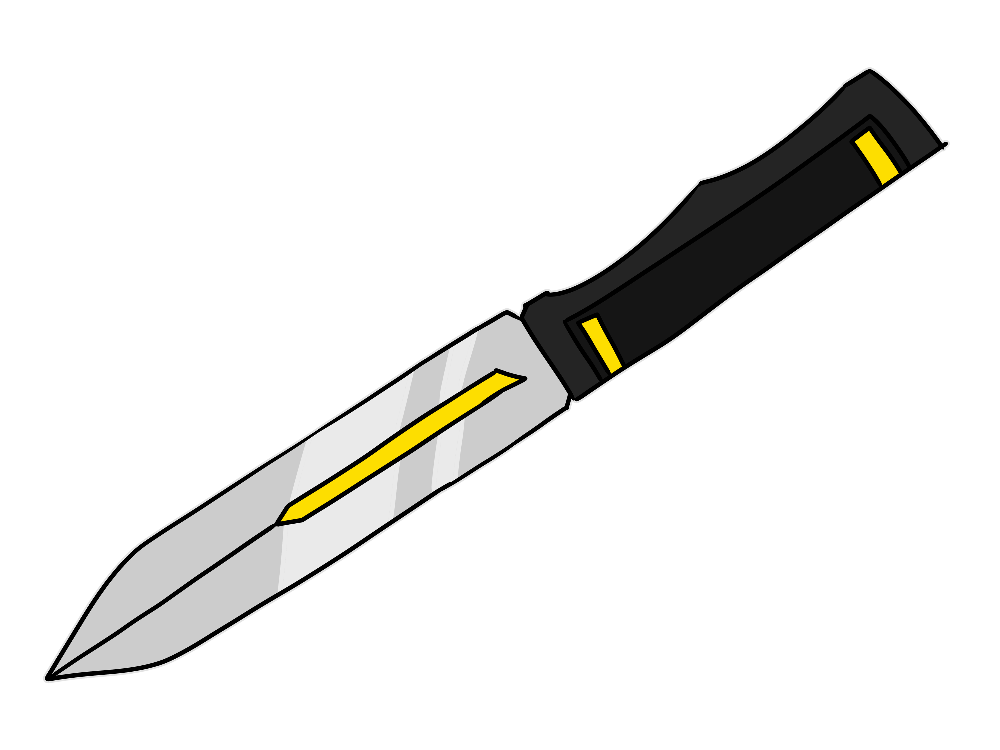

Psychological Assessment
Likes
Corvids. Was this any surprise?.
Dislikes
Feeling helpless. He was helpless when he lost what mattered most to him. He won't let it happen again.
CLASSIFIED RECORD
Subject File 004: "Ai Aester"
"I liked you, it's such a shame."

Their Pupils catch the light in a way that makes them consistently appear white.
Their wings span approximately 7 ft from tip to tip, allowing for minor defensive and in a pinch, offensive measures using them if need be.
Alias: The Reaper
Race: Faunus - Crow
Age: 18
Height: 5'4"
Weight: 130 pounds + 40 pounds (Wings)
Physique: Slim, rather frail looking
Hair Color: Purple-Blue Gradient
Eyes: Purple-Blue Gradient
Status: Unknown Threat
Role: Scale
Affiliation: The Viper Pit/Beacon Student 1st Year

Corvids. Was this any surprise?.
Feeling helpless. He was helpless when he lost what mattered most to him. He won't let it happen again.
"..."
Recovered Origin Records

His memory of his mother is hazy at best. His father was an abuser, whose anger bled onto the entire family. He doesn’t remember much of his childhood, aside from hiding in the corners of his home away from his father when he flew into his rage fueled rampages through the house. Furniture would break, items thrown, bottles broken and fresh wounds opened every time his father would enter one of his rampages. He huddled, his hands over his ears and his eyes shut tight, counting numbers until the screams would finally give way to sobs and eventual silence. He never looked his mother in the eyes, and she did not care.
Initially these rampages were directed at their mother. Aside from catching the occasional crossfire, the boy went mostly unharmed. When the boy turned five, the anger would turn to the young boy, finding the small malnourished child an easier target than someone of his own stature. A perfect target for a coward.
Bruises.
Scratches.
Cuts.
Abrasions.
Burns.
Wounds small and big littered his small frame, yet no one ever knew, as no one ever saw. The boy did not step outside, he was not allowed to, and he did not question it, as that is how his life had been. His world did not extend beyond his abusers.
His brother was born when he was 7. He was a tiny little thing, a small anchor in the place of chaos, a shred of light in the dark of the Sheep’s life. When his tiny little hand held his thin, frail finger, he felt warmth he had not felt in the years he had existed within this lonesome world. Just like that, his little brother had become the center of his empty world.
He protected his brother with all his little being could muster.
He’d starve so that his brother could have a slightly fuller meal, he’d always make sure his father’s attention never turned when he was enraged, he’d sit with the child, hurt and broken, so that the child did not know what it meant to be lonely. His little brother grew knowing violence never a target of it, knowing hunger but never starving, unlike his older brother, the boy grew knowing what warmth felt like, what gentle hands brought, and what laughter and giggles sounded like. He made sure of it.
He’d do anything for his precious little brother, the light of his world.
His life wasn’t always tragedy, he had his little brother. Had.
It was when the Sheep was 12 years of age, and his little brother the young age of 5, when his father had gone into another one of his rampages, that his true tragedy began, when the world that gave him one little light decided to smother it out once again.
He did not wince much as kicks met flesh, he simply curled along the floor as he always did, wrapping his head in his arms. He did not plead, nor cry, nor scream, simply beared as the drunken man, a bottle of whisky in hand, kicked at the helpless boy who so much as made a sound. His younger brother watched from the corner of the room, huddled in fear like the sheep always had done for countless nights alone. But the Sheep was no longer alone. So he took the blows without a word.
Maybe it was that the little boy, 5 years of age, had finally worked up the courage. Maybe it was finally then, that the boy had understood the severity of the violence that surrounded him. Maybe it was just, and unfortunate inevitability. But the little boy had yelled from across the room at the man who was his father, his voice shaking and small, but audible.
“Stop that-”
The voice was minor, almost background noise to the shouting and cursing of his father, but it was enough to draw the man’s attention for the first time away from the boy beneath his feet to the boy that huddled against the wall. His blood ran cold. The kicks had stopped and the man’s head rose to the child.
“You fucking little rascal think you can order me around-”
The man would turn towards the huddled mass, and the Sheep shot up, clinging to the man’s leg. He spoke for the first time to his father in years.
“Dad- please- I’m right here.”
He spoke, desperation leeching into his voice. He clung, as the boy on the other side began to cry, a sound that tore the boy’s soul apart.
"Dad!”
The sheep shouted, trying without success to draw the man’s attention back to himself. Tears welled in panic as the man made his way towards the child, and he did the only thing he could figure out how to do- he jumped up, grappling the man’s arm with his own, bringing the man’s finger to his mouth and bit down as hard as he could, a scream followed a sickening crunch.
Curses flew from his mouth as the bottle in his hand was brought down upon the sheep’s head, shattering with impact with a resounding THUCK and the boy stumbled, blood dribbling from his head, hands rising, not quite grasping anything as he toppled over to the ground not far from his little brother. His hazy eyes watched from the ground, as a piece of glass entered his father’s side at the hands of his little brother, and the favor swiftly returned with screams and a kick, that led the young boy’s head to the corner of a table. Their eyes met, from the coldness of the floor.
“Kiel…”
A murmur. A desperation unlike any other.
His aura and semblance would unlock concurrently, and as the purple field spread out from himself the air around would fill with a sickeningly sweet scent, attempting to heal everything living within his field. The sheep blinks his tears away, as he slowly slips to black. The little brother would never wake.
The Sheep would awaken days later, full panic, drenched in sweat. He didn’t know why. He shot up from his bed, clutching his chest as his eyes filled with and dribbled tears down his cheeks. He took a deep, slow breath as his body shook- from fear? From panic? From sorrow? He couldn’t figure out what. The second thing that slowly sinks into his consciousness is the fact that it was dark. Too dark. He blinks, raising a trembling hand up to his face, waving it gently in the air in front of him. Nothing.
“You’re awake.”
The Sheep jumps out of his skin in fright.
“Pardon.”
The voice is calm, almost gentle, a tone he was unfamiliar with. A hand touches his cheek, tugging the bottom of his eyelid down gently, and the boy instinctively flinches.
“... You’ve lost sight.”
A pause.
“What do you remember?”
The Sheep wracked his brain for what he could recall, but everything seemed to be turning up blank. Memories. All gone, what remained in its place only sensations- of fear, of panic, of loss. What had he feared? What had made him panic? What had he lost? Something hurt. Something hurt, something had carved an empty spot into his heart and he could not know what. Tears continued to flow as he hugged himself closer, uncertainty clouding his mind. He couldn’t see, he couldn’t remember, where was he, where was this, how did he end up here, who was this?
A hand settled atop his hair. Not quite friendly, not quite teasing, just gentle, and strangely calming. Another unfamiliar feeling.
“... rest.”
The footsteps, quiet and methodical, left the room with a soft click, leaving the boy alone to rest for the night. The sheep hugs his blanket close, his thoughts quietly rolling along in his mind. Nothing made sense. Nothing felt real. He burrows his face into his blankets, only soft sobs leaving the room between the crevices of the door.
Getting used to life without sight and without a familiar place to be was not easy. But the Sheep had ample time to get used to his new life. The empty spot in his heart still ached, but the crying eventually stopped, and the shaking subsided. He had learned to navigate using the sound of others around him, though he never quite got the hang of avoiding stationary obstacles. Nevertheless, the sheep pressed on.
He had learned the ones who had taken him in were named Miss Wisteria and Doctor Aluran, and the den, called the Viper Pit. He had gotten familiar with the one called the Doctor, who had come to check on him regularly since he began staying at the Den.
A week.
A month.
A year.
Two years.
Seven years.
The Sheep had spent seven of his past nineteen years in the Viper Pit, all of his waking memory forged within its walls. The Viper Pit was his home as much as he was a supporting pillar of it, whether he meant it to be so. The Sheep believes adamantly that the Viper Pit consists of good-willed people, as rowdy and chaotic as they may be. How could they not be? They had accepted a complete stranger into their midst, for what? So the Sheep exists, lives among the Viper Pit Ranks, As blind to the truth as he is in sight.
He never questions why the halls smelled faintly of blood,
Nor why some doors remain forever closed,
Nor why nonchalant talks became whispers in the presence of Miss Wisteria and Doctor Aluran.
Pherhaps this was for the best.
Range: Close-Ranged Combat
Notable Traits: Her attacks are both heavy and swift,
Threat Level: Unclear

An extension of her self, she wields the scythe with comfort and ease.
Gravity Dust
Adorns a significant portion of Asphodel and the inner lindings of her detachable sleeves.

Keen Senses. Because he is blind, his other senses have become keen to compensate. His sense of smell and hearing are above average to even that of other Faunus, making stealthily around Kiel immensely difficult, as he picks up the faintest of shuffling about.
Pacifistic Nature A bit of a pacifist, he prefers not to fight if possible and will avoid confrontation like the plague. When engaged in a fight, he is more concerned about escape than actually winning said fight.
"... I'll be here."